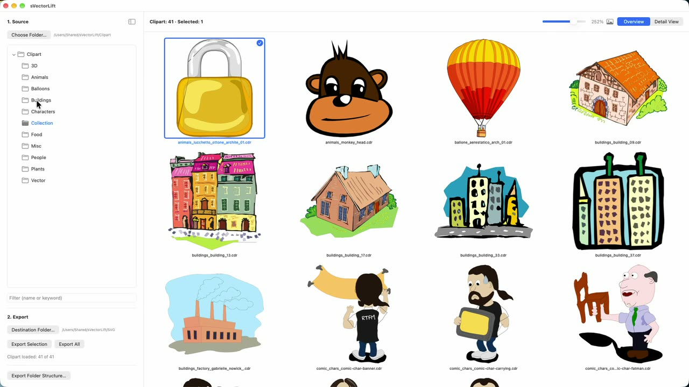
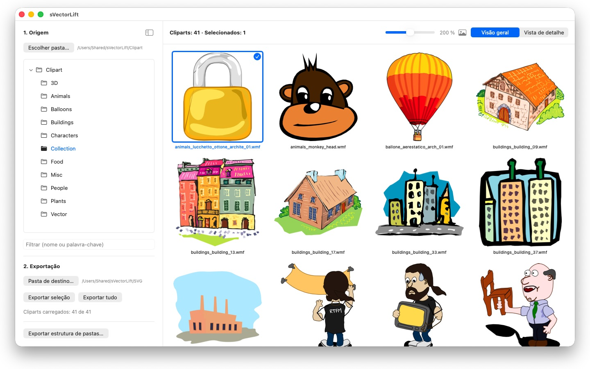
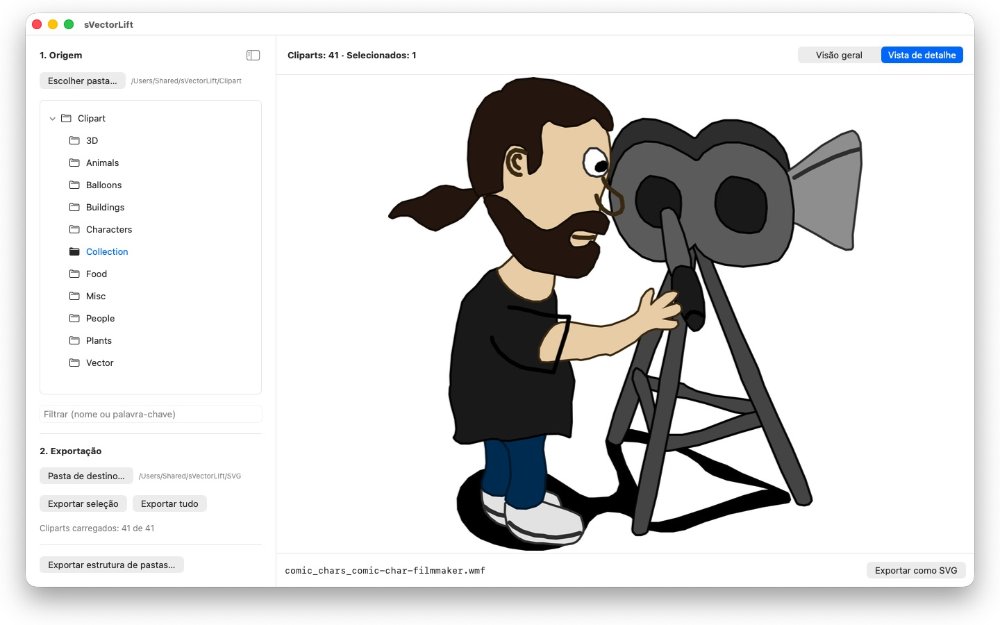

Milhares de cliparts em velhos CDs do CorelDRAW, presos em formatos que já ninguém abre. O sVectorLift transforma-os em imagens com que pode trabalhar hoje.

Visão rápida – pouco mais de um minuto no YouTube, em inglês com legendas em português

Algures numa prateleira está um CD cheio de cliparts que comprou em tempos. Os ficheiros continuam lá — mas nenhum programa do seu Mac os consegue abrir.
24 idiomas: Deutsch · English · Español · Français · Italiano · Nederlands · Português · Svenska · Norsk · Suomi · Polski · Čeština · Hrvatski · Magyar · Română · Türkçe · Русский · Українська · فارسی · ไทย · 日本語 · 한국어 · 简体中文 · 繁體中文
O sVectorLift volta a tornar estas imagens utilizáveis. Reconstrói cada desenho como um verdadeiro SVG: nítido em qualquer tamanho, editável e pronto a usar no Illustrator, Affinity, Inkscape, Sketch, Figma — ou no seu site. Não apenas para voltar a ver. Para voltar a usar. É isso que significa o «Lift» do nome: arte vetorial antiga, elevada ao nível das ferramentas com que trabalha hoje.
FORMATOS SUPORTADOS
- Documentos do CorelDRAW (.cdr), versões 6 a 9
- Corel Binary Meta File (.cmx) — incluindo a antiga variante CDRX, com a qual outras ferramentas falham
- Windows Metafile (.wmf)
- Computer Graphics Metafile (.cgm)
- QuickDraw 3D Metafiles (.3dm, .3dmf), renderizados como imagem
- Scalable Vector Graphics (.svg), mostrados diretamente
Muitos ficheiros com a extensão .cdr não são, na verdade, documentos do CorelDRAW, mas sim CMX — e é precisamente aí que os conversores habituais falham. O sVectorLift lê ambos.
O sVectorLift foi concebido para coleções de clipart: desenhos, símbolos, ilustrações. Não é um programa de paginação e não pretende reproduzir brochuras de várias páginas nem artes finais para impressão.
VERDADEIRA CONVERSÃO VETORIAL
Aqui não se fotografa uma miniatura de pré-visualização. O sVectorLift lê o próprio desenho: traçados e curvas de Bézier, cores de preenchimento, gradientes, contornos e padrões de traço, preenchimentos de padrão e textura, fotografias incorporadas e objetos de texto. O resultado são verdadeiros dados vetoriais, que pode redimensionar, recolorir e editar — e não a imagem de um desenho.
As imagens exclusivamente raster são, em vez disso, exportadas como PNG, para que nada se perca.
Precisa de uma imagem em vez de arte vetorial? «Exportar como PNG» e «Exportar como JPG» convertem qualquer desenho numa imagem, incluindo ficheiros SVG — no tamanho que escolher nas Definições.
EXPLORAR A COLEÇÃO
- Árvore de pastas de toda a coleção de clipart, incluindo subpastas
- Grelha de miniaturas vetoriais nítidas, com tamanho ajustável de forma contínua
- Vista de detalhe — com as teclas de seta para percorrer a pasta
- Filtrar por nome ou palavra-chave
- Seleção múltipla como na aplicação Fotografias: clique, ⌘-clique, ⇧-clique, seleção por arrastamento, ⌘A
- Abrir um ficheiro individual diretamente a partir do Finder («Abrir com» ou duplo clique)
- «Pastas recentes», que memorizam a subpasta e o ficheiro selecionado
- Exportar a seleção ou a pasta inteira de uma só vez
- Converter estruturas de pastas inteiras, incluindo subpastas, de uma só vez — a estrutura é mantida na pasta de destino
- Alterar o nome, mostrar no Finder, mover para o Lixo
RÁPIDO E ECONÓMICO
As miniaturas são calculadas apenas para o que está a ver — em segundo plano e com memória cache. As pastas grandes abrem-se de imediato, em vez de passarem minutos a processar milhares de ficheiros.
Tudo fica no seu Mac. Sem ligações de rede, sem contas, sem recolha de dados.
CorelDRAW é uma marca da Corel Corporation. O sVectorLift é um programa independente, sem qualquer ligação à Corel.
- Requer macOS 14 ou posterior
- 24 idiomas
- Suporte: SwiftAppsBavaria@gmx.net
Mais aplicações
sCollect
Organizar música, filmes, audiolivros, e-books e outras coleções numa biblioteca.
sCollectPlay
O leitor da biblioteca: reproduzir música, filmes, audiolivros e podcasts simplesmente de uma pasta, de um XML do iTunes ou de uma biblioteca do sCollect.
sCollectPlay Lite
A edição simplificada do sCollectPlay: abrir simplesmente uma pasta, um XML do iTunes ou uma biblioteca do sCollect e reproduzir daí música, filmes, audiolivros e podcasts – com playlists, faixas de áudio e de legendas, câmara lenta e avanço imagem a imagem. Só está aberta uma fonte de cada vez. O navegador de colunas, as playlists próprias e a lista de fontes usadas recentemente só estão disponíveis na versão completa.
sName2Date
Escrever a data do nome do ficheiro como data de captura em fotografias, filmes e gravações de áudio – para que um ficheiro como IMG_20240115_103000.jpg fique corretamente ordenado em qualquer gestor de fotografias.
sName2Date Lite
A edição para um ficheiro de cada vez: escrever a data do nome do ficheiro como data de captura numa fotografia, num filme ou numa gravação de áudio, defini-la manualmente, passar o nome para a notação ISO e desfazer tudo com ⌘Z – as mesmas capacidades do sName2Date, só que sem pastas inteiras.
SwiftRename
Do cartão de memória para o arquivo: dar nome a fotografias e vídeos pela hora da captura, arrumá-los por ano, mês ou dia e detetar duplicados — também em RAW.
sBikeBridge
Analisar voltas de bicicleta sem as carregar num portal: importar ficheiros FIT de qualquer ciclocomputador que grave neste formato, bem como GPX e TCX. As voltas ficam numa biblioteca própria no Mac – com mapa, potência e frequência cardíaca, fotografias e notas; os duplicados são detetados na importação. Indicadores por ano ou mês e filtros por distância, desnível acumulado e duração tornam as voltas comparáveis. Se desejado, o mapa também está disponível offline.